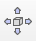
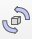
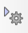
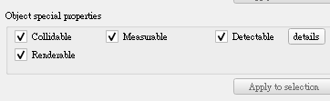
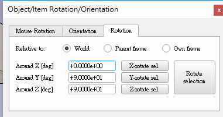
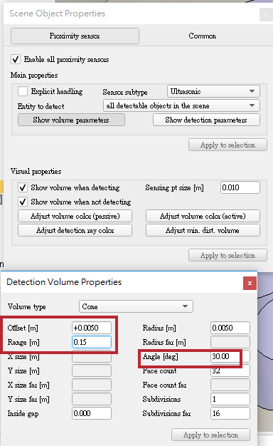

實習任務二
V-rep
V-rep的操作手冊:
http://www.coppeliarobotics.com/helpFiles/
V-rep Tutorial:
http://www.coppeliarobotics.com/helpFiles/en/tutorials.htm
BubbleRob tutorial:
http://www.coppeliarobotics.com/helpFiles/en/bubbleRobTutorial.htm
內容簡介
在創建Sphere時，要取消create dynamic and respondable shape 要是沒取消的話，Sphere會是dynamic(☑Body is dynamic)，會利用上面的Bullet2.78 engine去執行。
V-rep本身沒有dynamic分析的能力。
把要放入機器人的機械或元件寫成model，這樣才會有版本可言。
操作方式
 可開啟數學計算式，裡面的Collision跟Distance是Bubble Rob所具備的東西。
可開啟數學計算式，裡面的Collision跟Distance是Bubble Rob所具備的東西。
可平移物體的x,y,z軸。
可旋轉物體的方向。
 可調整視角。
可調整視角。
開啟當下選擇的物體的設定欄。
↪Simulation Setting➔At simulation end➔☑Reset scene to initial state(回到最初的位置)
快點Sphere前面的方格兩下➔Shape➔View/modify geometry(可調整物體大小)
快點Sphere前面的方格兩下➔Shape➔Adjust color➔Ambient/diffuse component(可調色)
快點Sphere前面的方格兩下➔Common➔☑Object is model base(變成model)
快點Sphere前面的方格兩下➔Common➔☑Object/model can transfer or accept DNA(model可用程式輸入)
Cone Proximity Sensor
Menu bar➔add➔proximity sensor➔cone type就可以創建一個錐形的接近傳感器。

設定proximity sensor➔快點前面的圖示兩下➔Show volume parameters➔可調整
➔Offset(偏移)
➔Range(範圍)
➔Angle(角度)

設定proximity sensor➔快點前面的圖示兩下➔Show detection parameters
➔把Don't allow detections if distance smaller than的打勾取消掉，這串字的意思是如果距離小於此時則不允許檢測。
v-rep 設計動態模擬
在V-REP中，僅動態模擬有限數量的物件(objects)。這些是 shapes,joints和 force sensors，但它將取決於場景結構和物體屬性，是否將動態模擬給定物件。在模擬過程中可以輕鬆識別動態模擬對象，因為在場景層次結構中(scene hierarchy)對象名稱旁邊會出現以下圖標：

點擊場景層次結構中的圖標（僅在模擬期間）將顯示與對象的動態行為相關的一些信息。應該通過動態模擬但由於某種原因無法動態模擬的對象將顯示以下圖標：

Static/non-static, respondable/non-respondable shapes
根據動態模擬過程中的行為，物件可分為4組：

在動態模擬期間，靜態形式不會受到影響（即它們相對於其從屬物件的位置是固定的），而非靜態物件將直接受到重力或其他約束（例如，動態啟用的關節，見下文）的影響。可響應的物件在動態碰撞期間相互影響（即它們產生相互碰撞反應，它們將相互反彈）。下圖說明了靜態/非靜態，可連動/不可連動的行為：

[靜態/非靜態，可連動/不可連動的形式行為和交互]
兩個可連動的物件將一直產生碰撞反應，除非它們各自的碰撞互相不重疊。可以在shape dynamics properties對話框中設置靜態/非靜態，可連動/不可連動的形狀屬性以及隱藏碰撞
Dynamically enabled joints/force sensor
如果沒有其他限制，非靜態物件將下降（即受重力影響）。可以通過將兩個物件與動態啟用的 關節或動態啟用的 力傳感器連接在一起來設置物件之間的動態約束。
動態啟用的關節是處於力或扭矩模式的關節或以混合方式操作的關節（參見關節屬性），並且具有作為從屬的物件和正好一個必須是非靜態物件的子物件。另外，可以在環閉合配置中涉及關節。在這種情況下，關節必須通過虛擬 - 虛擬鏈接連接到兩個形狀（其中鏈接類型必須是動態，重疊約束）。對於虛擬虛擬鏈接，請參閱虛擬屬性。
動態啟用的力傳感器是力傳感器，其具有作為物件的物件和恰好一個必須是非靜態形式的子物件。另外，可以將力傳感器包括在環閉合配置中。在這種情況下，力傳感器必須通過虛擬 - 虛擬鏈接（其中鏈接類型必須是動態，重疊約束）連接到兩個物件。對於虛擬鏈接，請參閱虛擬屬性。
下圖顯示了關節或力傳感器被認為是動態啟用的有效情況（假設關節/力傳感器和兩個物件位於動態模擬的模型中，這是默認情況）：

按照上述指南非常重要，以獲得動態啟用的關節或力傳感器。在模擬過程中，如果V-REP發現未動態啟用的力傳感器，它將在場景層次結構視圖中的名稱旁邊顯示一個小警告圖標。對於力/扭矩模式中的關節或者應該以混合方式操作並且不是動態啟用的關節也是如此。
以下是一些不會動態啟用關節的示例情況：
接頭不是有力或扭矩模式，接頭不是以混合方式運行。
關節的從屬沒有形式。
關節有多個子物件。
關節直接連接到另一個關節。
關節（或它連接的兩種形式之一）位於未動態模擬的模型中
以下是一些不會動態啟用力傳感器的示例情況：
力傳感器的從屬沒有形式。
力傳感器有多個子物件。
力傳感器（或它連接的兩種形式之一）位於未動態模擬的模型中。
BubbleRob
1.建立BubbleRob本體
新增一個Sphere，X-size為0.2(單位為m)
在object common properties下的object special properties將Collidable、Measurable、Renderable、Detectable都打勾，將本體位置設定在Z軸(Along Z)0.02(須確認本體是照world移動)接著在選單雙擊Sphere將物件名稱改為BubbleRob就完成本體設定。

2.建立Proxmity sensor
在選單中建立一個Proximity sensor且選為Cone type將sensor利用旋轉功能在Around Y及Z輸入90位置為X-coord輸入0.1及Z-coord輸入0.12


接著設定sensor感應範圍，在選單點擊感測器符號開啟它的設定框，點擊show volume
parameter開啟選單設定Offset=0.005、Angle=30、Range=0.15

點擊Show detection parameters，將"Don't allow detections if distance smaller than"選項取消打勾。
將感測器名稱設定為bubbleRob_sensingNose，就完成感測器設定了。
在Scene hireachy(場景等級)將完成設定的sensor放在bubbleRob下最後將兩項物件Edit->"Make last selected object parent"連結成一個物件。
3.建立bubbleRob的輪子
建立一個cylinder尺寸為(0.08,0.08,0.02)，跟本體一樣將object common properties內的特殊屬性都打開，設定位置(0.05,0.1,0.04)和旋轉(-90,0,0)，此物件命名為bubbleRob_leftWheel，然後將完成的物件複製一份且將位置參數Y設定為-0.1，此物件命名為bubbleRob_RightWheel
設定joint(motor)
Add->joint->Revolute建立一個軸，建立完成按住ctrl選擇剛剛的bubbleRob_leftWheel然後在postion及 orientation內選擇apply to selection來複製輪子的參數，這樣軸的位置就會跟左邊輪子一樣了。
點擊開啟軸參數的設定框，將 Show dynamic parameters內的enable the motor以及底下的Lock motor when target velocity is zero都打勾，完成左邊輪軸設定後，用同樣方式製作右輪軸。
最後將輪子層級放置在輪軸底下，輪軸層級則置於本體下

4.建立slider
開始模擬後發現機器人會向後翻轉，因為少了第三個接地點
建立一個圓形物件(設定0.05)，一樣打開所有特殊屬性，將此物件命名為 bubbleRob_slider，在shape dynamics properties裡將物件設定為無摩擦。
摩擦力相關的係數都調成0
接著建立Force sensor命名為bubbleRob_connection，將它往上提0.05
，再跟剛剛的滑塊接合成一個物件，這個物件的位置設定X=(-0.07)，此物件的層級則放在bubbleRob底下，這樣就完成第三個接地點了，但是執行模擬後會發現滑塊會微微震動，那是因為滑塊跟本體互相碰撞了，為了避免這種狀況，開啟滑塊及本體的shape dynamics properties將local respondable mask分別設定為00001111及
11110000這樣兩個物件就不會互相碰撞了。
滑塊設定

本體設定

5.增加stability及Target velocity測試
點擊dynamic對話框內的M=M*2選項三次將輪子以及第三個支點的重量變成8倍，接著在軸的dynamic對話框將Target velocity設至50後開始演算，會發現bubbleRob會穩定的直線前進最後掉出平台，然後再將速度重置為0，測試就完成了。
6.collection object及Calculation module properties
在collection對話框內用Add new collection，新增的集合是空的，將列表上的bubbleRob選擇後點選Add加進collection，命名為 bubbleRob_collection ，這樣bubbleRob底下的零件都包含集合裡。
在選單點選Calculation module在distance下Add new distance object，選擇剛剛新增的bubbleRob_collection及all other measurable objects in the scene，
命名為bubbleRob_distance，這個設定在之後會測量本體以及其他可碰撞物件之間的最小距離。
7.Graph設定
新增一個Graph命名為bubbleRob_graph在列表上放置於bubbleRob底下將graph位置設定在(0,0,0.005)開啟graph properties，將Display XYZ-planes選項取消打勾，接著Add new data stream to record，視窗上方(Data stream type)選擇Object: absolute x-position下方(Object / item to record)選擇bubbleRob_graph，在Data stream recording list會出現剛剛新增的設定，Y軸跟Z軸也用同樣方式做設定。
為了能夠測量機器人跟環境之間的最小距離再新增一個設定上面選擇Distance:segment length下方選擇bubbleRob_distance。
將XYZ軸及距離設定分別命名為bubbleRob_xpos、bubbleRob_ypos、bubbleRob_zpos、 bubbleRob_obstacle_dist。

選擇bubbleRob_xpos在底下的Time graph properties將Visible取消掉，其他兩軸也用相同方式操作。
接著在Edit 3D curves點選 Add new curve設定如圖

Curve width設定為4，然後改成Relative to world，完成後測試就會發現機器人的路徑會以線顯示在螢幕上。
8.建立cylinder
增加數個(0.1,0.1,0.2)的cylinder包圍bubbleRob，將cylinder的特殊屬性參數全部打開，移動cylinder途中按著shift可以進行更細微的移動，按住ctrl則可以讓物件可以在正交方向移動。
9.model設定
選擇bubbleRob後在object common properties內將Object is model base和Object/model can transfer or accept DNA都打勾，這樣bubbleRob邊界框就包含底下所有的物件在內了。
接著將兩個joint、sensor跟graph都選起來然後將參數設定ignored by model bounding box，讓模型的邊界框略過sensor跟joint然後將joint跟sensor的camera visibility layer 2取消打勾改為打勾
10，這樣在畫面上就不會看見軸跟sensor範圍了，最後將感測器、兩個輪子、支點、圖表的Select base of model instead都打勾，這項設定讓我們只能一次移動整個機器人而不是單個零件，能避免定位好的零件被移動。

10.感測器(vision sensor)
增加一個新的感測器，位置、角度跟BubbleRob's proximity sensor同樣，在畫面上點選增加Perspective type的sensor，然後放到proximity sensor底下，新的sensor設定如下

著點擊Show filter dialog開啟filter對話框，選擇Edge detection on work image然後按Add，新增的過濾組件要上移至第二層，移動完後點擊兩下剛剛設定的組件將Threshold(閾值)設定為0.2，設定到這邊基本上就完成了。

完成sensor設定後新增一個floating view然後在它上面右鍵選擇(view->Associate view with selected vision sensor)將視窗綁定到剛剛設定完的sensor上(要確保sensor是被選擇的狀況)，接著試著開始模擬，視窗上能夠看見目標就成功了。

11.程式:位於工具列的script功能可以編輯code
最後的步驟要將code放進完成的模型內，選擇bubbleRob點選(Add->Associated child script --> Non threaded)

新增一個non-threaded child script，接著點選bubbleRob旁邊的圖示就能打開script，將code複製在原本的code後面關掉視窗就完成了。

需注意code內部

leftMotor=sim.getObjectHandle("bubbleRob_leftMotor") -- Handle of the left motor
rightMotor=sim.getObjectHandle("bubbleRob_rightMotor") -- Handle of the right motor
noseSensor=sim.getObjectHandle("bubbleRob_sensingNose") -- Handle of the proximity sensor
紅框內的名稱，如果大小寫或是名稱不同程式就沒辦法成功執行。
bubbleRob在模擬時會自動避開路徑上的物件，且畫面有能調節速度的面板。
BubbleRob模擬影片
40623110翁俊揚
40623102 吳柔燕
40623124葉修宏
檔案位置：BubbleRob.ttt
40623111 王映捷
40623152 潘季宏
40623144 林昭權
40623121蔡朝旭
_
football table
台桌繪製影片（簡易版）：
球員繪製影片：
實習任務一 << Previous Next >> 實習任務三